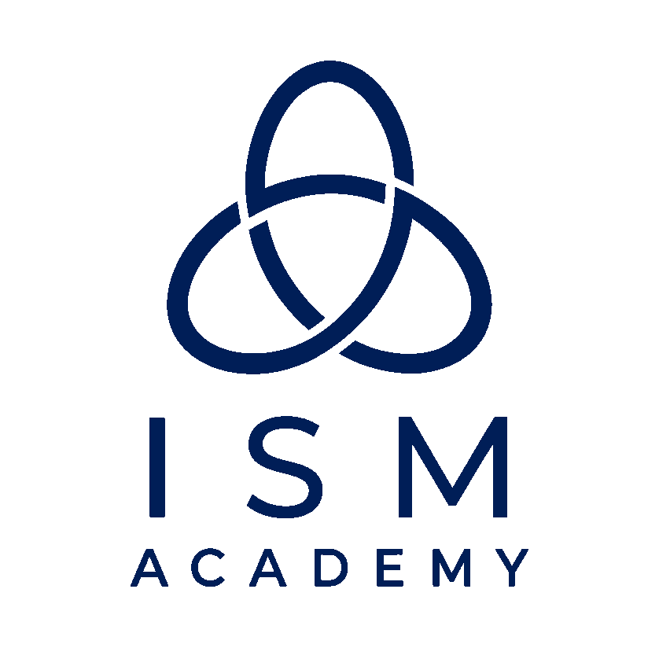
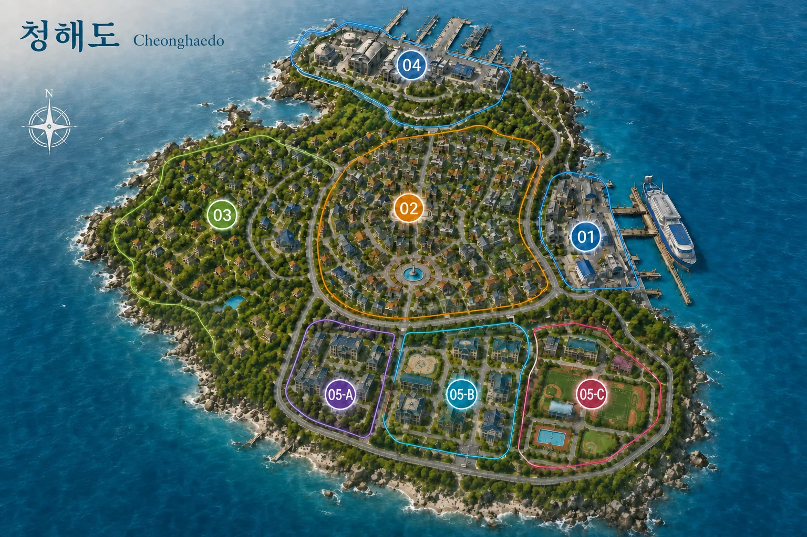
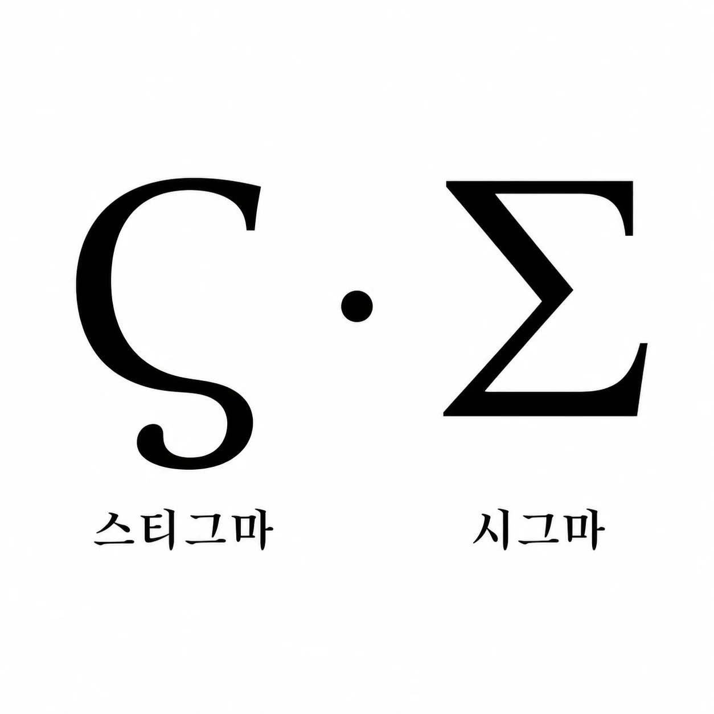
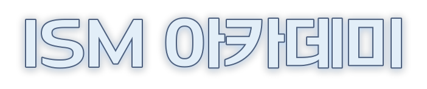

스티그마
개인의 신체, 감각, 생태와 영적 반응에서 서로 다르게 발현한다. 같은 종족이라도 능력의 성질과 한계는 개인마다 다르다.

ISM ACADEMY · CHEONGHAEDO · 2030
현대 로우 판타지 이종족 군상극의 세상, 취향입니다만, 존중해주시죠?
2030년 대한민국. 인간과 이종족이 오래된 공존의 기억과 새로운 차별 사이에서 흔들리는 시대, 서해의 인공섬 청해도에 세워진 ISM 아카데미를 중심으로 서로 다른 이름과 삶이 교차한다.
Nomen ante genus, fides ante vim 이름은 혈통보다 앞서고, 신의는 힘보다 앞선다.
여덟 항목 중 하나를 고르면 그 장만 펼쳐집니다. 좌우 화살표로도 넘길 수 있습니다.
ISM 세계관은 2030년 대한민국, 서해 인공섬 청해도를 중심으로 인간과 다양한 이종족이 같은 사회 안에서 공존을 다시 세워 가는 시대를 다룬다. 인간과 이종족은 오래전부터 서로의 존재를 알고 함께 살아왔으며, 사람들은 이종족 설화와 금기를 존중하고 양측의 생활권을 유지했다. 공존이 언제 시작되었는지는 아무도 모른다. 다만 그 존재를 공식적으로 인정한 것은 약 160년 전의 일이다.
그러나 1988년 8월 8일, 부산시에서 뿔 달린 흉악한 이종족 아자키엘이 인간 대량학살을 벌인 8888 참사 이후 공존의 균형은 무너졌다. 한 개인의 범죄가 이종족 전체의 위험성으로 확대되면서 차별이 심해졌고, 수가 적었던 이종족은 인간 사회에서 한발 물러났다. 서로의 존재와 생활을 모르는 것은 아니지만 실제 교류와 신뢰의 깊이는 지역과 개인의 과거에 따라 다르다. ISM 아카데미는 이런 시대 속에서 이종족이 자신의 정체성을 잃지 않으면서 인간 사회와 접점을 만들 수 있도록 교육, 기록, 보호, 중재 기능을 맡는다.
육지에서 확인된 주요 이종족 생활권은 인천 항만 빈민가, 서울 대학로 인근 주거지, 경남 산청군 시천면의 지리산 동남부 공동체 세 곳이다. 인천은 가장 다양한 종족이 일용직과 허드렛일로 생계를 잇는 열악한 거주지이며, 대학로에는 종족 특징을 감춘 채 경제적 기반을 마련한 이들이 많다. 지리산 공동체는 8888 참사 뒤 부산을 떠난 가구들이 폐산촌에 자리 잡아 만든 곳으로, 약초와 산나물, 양봉과 목공으로 생계를 잇고 가구 대표 회의와 순환 대표 세 명이 공동생활을 조정한다. 참사 발생지 부산은 2030년 현재도 대한민국에서 이종족 배척이 가장 심해, 공개적인 생활권을 만들기 특히 어려운 도시다.
김성훈은 38세이던 2012년 막대한 사재를 투입해 청해도 조성을 시작했다. 2016년 1단계 기반시설을 완공한 뒤 2017년 ISM 아카데미를 설립해 개교했다.
섬의 건설 사실은 공개되었지만 자금망과 내부 설계, 실제 목적은 비밀리에 관리되었다. 정부에는 이종족 등록·감시·교육을 위한 관리 구역으로 설명해 건설 허가를 받았고, 인간보전전선에는 인간 사회와 분리하기 위한 격리 시설로 전달해 정치적 지지와 비개입을 끌어냈다. 실제로는 이종족의 생활권과 교육·의료·자치 기반을 보장하도록 설계했다.
ISM 아카데미는 단순한 교육 시설이 아니라 이종족과 인간 사회 사이의 완충지대다. 아카데미생들은 보호의 대상이면서도, 각자의 종족 특성과 사회적 위치에 따라 독립적인 책임을 지닌 구성원으로 대우받는다.
교육은 동화를 강요하기보다 공존을 준비하는 데 초점을 둔다. 종족별 특성 이해, 사회 적응, 직업 교육, 예체능 활동, 재사회화 과정은 모두 한 개인이 자기 이름으로 사회 안에 설 수 있게 만드는 장치다.
청해도는 관광 목적의 상시 출입을 허용하지 않는다. 주민, 입학 예정자와 승인된 관계자는 동부 관문지구에서 입도 허가를 확인받으며, 외부 물류 인력은 북부 화물부두와 지정 구역 안에서만 활동한다.
매립 면적은 약 2.2㎢, 상주 인구는 약 1,000명이다. 들어올 수 있는 사람이 곧 인구가 되는 섬이라 도시 규모의 기반시설을 마을 규모의 인원이 돌린다. 아카데미생 약 100명도 그 안에 있다.
청해도의 5개 권역과 ISM 아카데미의 세부 구역을 안내합니다. 색상과 번호는 오른쪽 지도 표식과 대응합니다.

ISM의 종족 분류 체계는 생물학적 단정이 아니라 기록, 교육, 보호 대응을 위한 실용적 기준에 가깝다. 신체 구조, 감각, 생태, 전승, 사회적 인식을 함께 참고하지만 개인의 정체성을 한 갈래로 고정하지 않는다.
ISM은 넓은 통칭보다 각 존재가 실제로 속한 종족명을 우선한다. 설녀, 듀라한, 늑대 수인, 백룡처럼 구체적인 이름을 사용하며, 상세한 계통과 하위 분류는 별도 문서에서 다룬다.
정식 이종족 분류 체계 보기
스티그마는 오직 이종족만이 지닌 채 태어나는 특수한 능력 체계다. 일반적인 과학만으로는 설명하기 어려운 신체, 감각, 생태, 영적 반응이 개인별로 다르게 발현된다.
모든 스티그마가 전투에 적합한 것은 아니며, 발현 조건과 제약도 제각각이다. ISM은 스티그마를 강화 대상이 아니라 이해, 제어, 안전, 책임의 대상으로 다룬다.
스티그마라는 이름은 지금은 잊힌 옛 문자이자 ‘낙인’을 뜻한다. 이는 이종족의 고유한 힘과, 그 차이를 이유로 사회가 부여한 낙인을 함께 상징한다. 반면 시그마는 서로 다른 힘을 하나의 규격으로 묶어 통제하는 폭력적 동화(同化)의 기호다.
개인의 신체, 감각, 생태와 영적 반응에서 서로 다르게 발현한다. 같은 종족이라도 능력의 성질과 한계는 개인마다 다르다.
인간이 초상적인 힘을 사용할 수 있도록 제작한 인공 병기를 시그마 웨폰이라 한다. 등급과 형태에 따라 서로 다른 현상을 제한적으로 재현한다.
원본 스티그마를 완전히 재현하지는 못하며, 일부 성질만 짧고 폭력적인 형태로 발현한다.
이종족의 스티그마 발현 반응을 생체 조직, 혈액, 영적 잔향과 감각 반응 기록에서 강제로 추출해 인공 매개체에 고정한다.
추출 과정은 비인도적으로 진행되는 경우가 많아, ISM은 이를 스티그마 약탈과 중대한 인권 침해로 규정한다.
대학로 인근에서 적월극장을 운영하는 비밀 이종족 공동체. 낮에는 극단으로 위장하고, 밤에는 이종족 전용 카지노로 전환한다. 인간을 배척하지만 단속과 차별을 피해 도망친 이종족에게 은신처를 제공하기도 한다.
8888 참사 직후 기존 이종족 혐오 세력과 정 실바노의 계략이 결합해 탄생한 단체. 인간 사회의 안전과 복지를 내세우며 정치·제도권에서 활동한다.
실제로는 인간우월주의를 바탕으로 제도권 안에서 로비와 압박을 행사하며 이종족의 권리를 제한하려 한다.
8888 참사 뒤 인간보전전선과 함께 만들어진 산하 조직. 직접적인 복지와 보호, 이종족 관련 현장 대응을 수행한다고 내세운다.
실제로는 이종족 납치와 폭력, 실험과 시그마 웨폰 공급망에 관여하는 현장 조직이다.
강화도 북부 양사면과 하점면 사이, 봉천산 기슭의 은신 공동체 귀로원을 거점으로 생활권과 자치, 구조망을 지키는 이종족 집단. 인천 항만 사태에서 많은 이종족을 구하고 큰 희생을 치른 뒤 젊은 구성원들의 강경한 목소리가 커졌다.
GBN 소속 신입 기자 한서윤이 은폐 사건과 보호 시설 비리, 후원금 흐름을 취재한다. 어느 세력의 주장도 증거 없이 받아들이지 않는 외부 기록자다.
인간과 이종족은 서로의 존재를 알고 설화와 금기를 존중했으며, 각자의 생활권을 유지하면서 장터와 항구, 산촌과 교역로에서 제한적으로 교류했다.
부산시에서 뿔 달린 흉악한 이종족 아자키엘(Azachiel)이 인간을 대상으로 대량학살을 벌인 사건. 인간과 이종족의 첫 조우가 아니라, 오랫동안 이어진 공존의 균형을 무너뜨린 역사적 전환점이다.
한 가해자의 범죄가 이종족 전체의 위험성으로 확대되면서 차별과 공포가 급격히 심해졌다. 수가 적었던 이종족은 생활권을 닫고 한발 물러났으며, 엘프 알드헤임 가문은 집단 보복과 단절을 막기 위한 타협과 중재를 시도했다. 같은 혼란 속에서 기존 혐오 세력과 정 실바노의 계략이 결합해 인간보전전선과 백색울타리가 탄생했다. 아자키엘은 사리엘의 형이며, 사리엘은 그를 실패한 지배자라고 평가한다.
38세의 김성훈이 사재를 종잣돈으로 투입해 인공섬 조성을 시작했다. 건설은 공개 사업으로 진행했지만 자금망과 실제 목적, 내부 설계는 비밀리에 관리했다.
2016년 청해도의 1단계 기반시설이 완공되었고, 이듬해 ISM 아카데미가 설립되어 문을 열었다.
인천 항만에서 이종족 시위와 대규모 진압이 벌어진 사건. 대외적으로는 과격 시위와 폭동을 진압하는 과정에서 발생한 참사로 기록되어 있다.
백색울타리가 연루된 이종족 아동 치사 사건에 항만 공동체와 연결된 귀향파가 가장 크게 반발했고, 백색울타리의 강압적 대응에 자극받은 일부 무소속 이종족과 귀향파 젊은 구성원이 실제로 폭력적인 소요를 일으켰다. 백색울타리는 일부의 폭력을 현장의 모든 이종족에게 확대 적용해 정부의 진압 승인을 얻은 뒤, 소요 가담 여부를 가리지 않는 무차별 체포·살해·납치를 벌였다. 귀향파는 강화도 북부로 피난로를 열어 많은 이종족을 구했지만 후위 구성원 상당수를 잃었고, 사건은 이종족 사회에 실제 소요를 구실로 벌어진 계획적인 학살·포획으로 기억된다.
청해도의 ISM 아카데미를 중심으로 이종족 보호, 교육, 기록, 사회 적응을 둘러싼 제도와 갈등이 동시에 이어지는 시기다.
학사 운영의 기준 시간표와 연간 행사를 확인합니다.
서로의 생활을 나누는 내부 행사와 인간 사회에 문을 여는 공개 행사를 구분해 운영합니다.
입학식과 교내·기숙사 안내, 환영 점심, 키류 센토의 체육 오리엔테이션을 진행합니다. 이후 공식 일정은 없으며 5일 화요일부터 정규수업을 시작합니다.
주말 이틀 동안 신청과 모집을 함께 진행합니다. 요리부·사진부·특촬물 연구부·도서부·신체개발부가 부원을 받고, 학생이 새 동아리를 제안해 담당 교수를 구할 수도 있습니다.
종족 문화와 생활 방식, 특기와 동아리를 나누는 이틀간의 내부 축제. 체험 부스·학생 수업·야시장·작품 전시가 이어집니다.
청해도 서부 해안의 별도 시설 ‘청파합숙소’에서 진행하는 자유 참가 합숙. 해양 활동·요리 당번·담력시험·캠프파이어를 함께합니다.
야구와 축구, 장애물 릴레이와 스티그마 제한 협동 미션으로 구성된 ISM식 체육 행사입니다.
2018년 할로윈 인천 항만 사태로 중단되었다가, 학생들의 일상을 되찾기 위해 2030년 다시 여는 내부 야간 행사입니다.
인간 방문객에게 캠퍼스와 이종족 문화를 소개하는 대외 행사. 투어·전시·공연·교류 토크를 진행합니다.
학생과 직원이 선물 교환, 저녁 식사와 미니 공연으로 한 해를 마무리하는 내부 연말 행사입니다.
2030학년도 동아리 명부
가입에 관심을 보인 학생은 확정 부원에 포함하지 않았습니다.
| 상태 | 동아리 | 부장 | 현재 부원 |
|---|---|---|---|
| 운영 | 요리부요리 연구와 나눔 | 보레알리스 | 이나리 쿄코 |
| 운영 | 사진부필름·디지털 사진전 | 루이 바토리 | — |
| 운영 | 특촬물 연구부특촬물 감상과 완구 연구 | 유스티나 설리번 | — |
| 운영 | 도서부문학 토론과 도서 관리 | 모리안 네바 | — |
| 운영 | 신체개발부종족별 웨이트트레이닝 | 키류 센토 | — |
| 유령부 | 밴드부문화예술관 지하 방음실 | 없음 | 없음 |
평가 일정4월·10월 하순 중간고사 · 6월 19일·12월 20일 기말고사 · 6월 26일 여름방학 시작

ISM 아카데미ISM 아카데미 소속 아카데미생과 교직원을 확인합니다.
ISM 아카데미 외부에서 활동하는 조직 인물과 언론·민간 인물을 확인합니다.
ISM 최초의 인간 교수가 되는 것도, ISM 아카데미생이 되는 것도,
혹은 또 다른 누군가가 되어 이 세상에 뛰어드는 것도, 당신의 자유!
인간보다 더 인간다운 삶을 원한다면
ISM의 문은 열려 있습니다